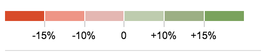

USA Budget visualizer, in the style of the
NY Times 2012 visualization
by Shan Carter and Amanda Cox, realized in
D3
In this repository
you can find the parser code and some more info. Roll over the boxes to view more information.
2017 grouped by Account (Mandatory/Discretionary)
2017 grouped by Super Functions
2012 grouped by Account (Mandatory/Discretionary)
2012 grouped by Super Functions
2017 Discretionary grouped by Account
2017 Discretionary grouped by Super Functions
2012 Discretionary grouped by Account
2012 Discretionary grouped by Super Functions